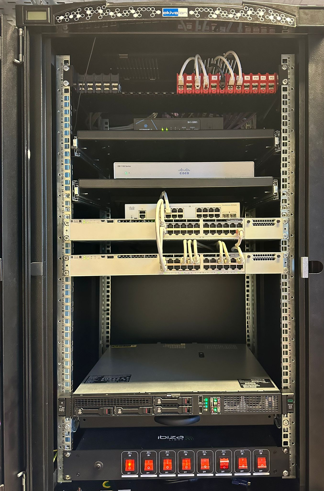

Description de l'entreprise GNEX
GNEX (Game Network Experience) a été fondée en 2020 à Sophia Antipolis par Nathan Lambert et Élise Martin, un couple de passionnés de technologie et de jeux vidéo. Ils ont constaté un besoin croissant d'amélioration des infrastructures réseau pour le secteur du gaming.
En 2024, l'entreprise compte environ 300 salariés répartis sur deux sites : Sophia Antipolis (06560) et Paris, Avenue des Arts et Métiers — Saint Denis (93200).
Dans le cadre d'un projet scolaire, nous avons conçu et déployé une infrastructure réseau complète pour répondre aux besoins spécifiques de l'entreprise.
Secteurs d'activité
Étude du besoin et architecture réseau
Équipements réseau déployés
-
Switches de niveau 2 : Création de VLAN, SSH & VTP
↓ Télécharger la procédure Switch L2 -
Switches de niveau 3 : Mise en place de VLAN, DHCP, ACL & SSH
↓ Télécharger la procédure Switch L3 -
Routeurs : Déploiement de VLAN, Routage inter-VLAN, DHCP, ACL & SSH
↓ Télécharger la procédure Routeur - Bornes Wi-Fi : Couverture complète en 5 GHz — réseau interne & réseau invité
-
Pare-feu Stormshield : Mise en œuvre de routage, NAT & d'un VPN (en cours...)
↓ Télécharger la procédure Stormshield

Cisco & Stormshield
Équipements utilisateurs
- Postes portables performants pour tous les employés (développement du télétravail depuis 2020)
- Stations d'accueil avec connexions pour rejoindre le domaine
- Deux écrans par utilisateur pour améliorer la productivité
- Postes fixes puissants dans la partie industrielle hardware pour les applications métiers
Systèmes et services déployés
Architecture VLAN
La segmentation VLAN permet d'isoler le trafic par service, assurant sécurité renforcée, performances optimisées et gestion administrative simplifiée.
- Chaque VLAN (sauf visiteur) peut uniquement accéder aux VLANs "Serveurs" et "Sortie"
- Le VLAN "Visiteurs" peut uniquement interroger les serveurs DNS et DHCP et accéder à Internet
- Mise en place de règles de filtrage (ACL) pour contrôler l'accès entre les VLANs
Résultat attendu
Une infrastructure moderne capable de soutenir les opérations quotidiennes de manière sécurisée et efficace, avec une haute disponibilité, des performances optimales et une protection maximale des données sensibles.